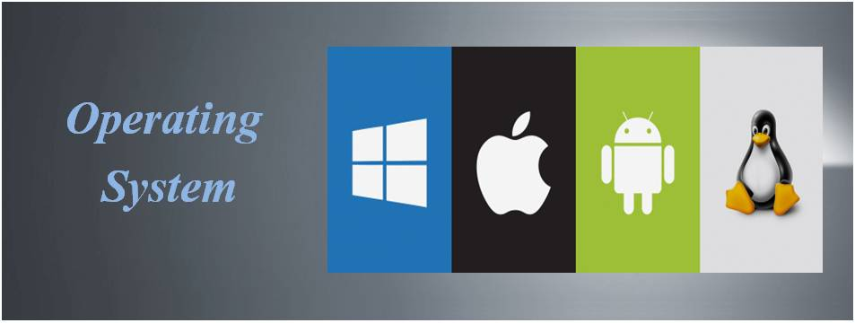

Pandangan Umum Sistem Operasi dan Sistem Komputer
Definisi Sistem Komputer dan Sistem Operasi
Sistem komputer adalah kombinasi perangkat keras (hardware), perangkat lunak (software), dan pengguna (peopleware) yang saling berinteraksi untuk memproses data menjadi informasi. Sementara itu, sistem operasi adalah perangkat lunak yang berfungsi sebagai perantara antara pengguna dan perangkat keras komputer, mengelola semua sumber daya dan menyediakan lingkungan kerja yang nyaman dan efisien.
Komponen Utama Sistem Komputer
- Hardware: Perangkat fisik seperti CPU, memori, hard drive, dan perangkat input/output.
- Software: Program-program yang berjalan di atas perangkat keras, termasuk sistem operasi dan aplikasi.
- Users (Pengguna): Orang yang mengoperasikan komputer untuk berbagai keperluan.
- Data: Informasi mentah yang diproses oleh sistem komputer.
Peran Sistem Operasi dalam Sistem Komputer
- Manajemen Proses: Mengatur eksekusi program-program yang berjalan secara simultan.
- Manajemen Memori: Mengalokasikan dan mengelola penggunaan memori utama (RAM).
- Manajemen Penyimpanan: Menyediakan sistem file untuk penyimpanan data yang terorganisir.
- Manajemen Perangkat I/O: Mengkoordinasikan interaksi antara sistem dengan perangkat input/output.
- Manajemen Keamanan: Melindungi data dan sumber daya sistem dari akses tidak sah.
Tujuan Sistem Operasi
- Efisiensi: Mengoptimalkan penggunaan sumber daya komputer.
- Kenyamanan: Menyediakan antarmuka pengguna yang memudahkan interaksi dengan komputer.
- Evolusi: Mendukung pengembangan dan inovasi teknologi komputer baru.
Contoh Studi Kasus
Kasus: Bagaimana komputer dapat menjalankan pemutar musik, browser, dan editor dokumen secara bersamaan?
Jawaban: Sistem operasi bertugas mengelola proses-proses tersebut, membagi sumber daya CPU dan memori secara efisien, serta memastikan bahwa input/output seperti suara dan keyboard dapat diakses masing-masing aplikasi tanpa konflik.
Jenis Sistem Operasi
- Batch System: Memproses data dalam jumlah besar tanpa interaksi langsung pengguna.
- Time-Sharing System: Membagi waktu CPU secara cepat di antara banyak pengguna.
- Real-Time System: Memberikan respon segera terhadap input, digunakan di sistem kritikal.
- Distributed System: Mengelola kumpulan komputer yang terhubung dalam jaringan untuk bekerja sama.
- Embedded System: Sistem operasi khusus untuk perangkat kecil seperti router, smart TV, dan kendaraan.
Contoh Sistem Operasi Modern
- Microsoft Windows: Populer di komputer pribadi dan bisnis.
- Linux: Open-source, banyak digunakan di server dan superkomputer.
- macOS: Sistem operasi eksklusif untuk perangkat Apple.
- Android: Sistem operasi mobile berbasis Linux.
- iOS: Sistem operasi mobile untuk iPhone dan iPad.